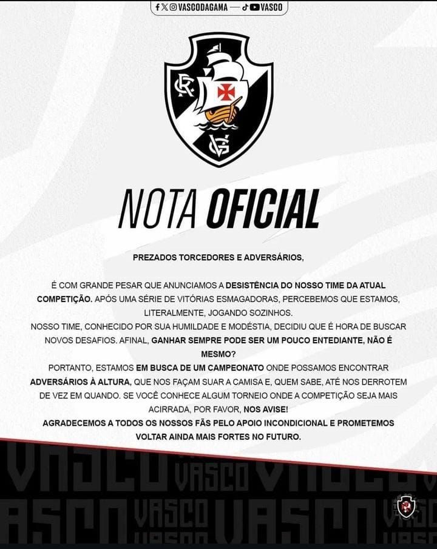

Vasco Desequilibrante

Vasco está fora do Brasileirão Botano
Após uma sequência de vitórias avassaladoras, Vasco da Grana comunica seus torcedores que irão se deslocar de liga, já que o nível do campeonato Brasileiro não acompanha o atual nível da equipe do Vasco.
Qual liga vocês acreditam que seria a melhor opção para o clube?